Maya: task flow
The decision logic behind the ten beats: sign-in, the briefing, the three kinds of replan (world, conversation, Michael), the courier errand and the hand-off to the empty car.

Out of scope for now: errand types beyond pick-ups and drop-offs, the bento menu's contents, a full activity log, wallet top-ups and statements. Edge cases (no stock anywhere, florist refuses, false positives, courier failures) are in the Edge Cases and Validation Plan.